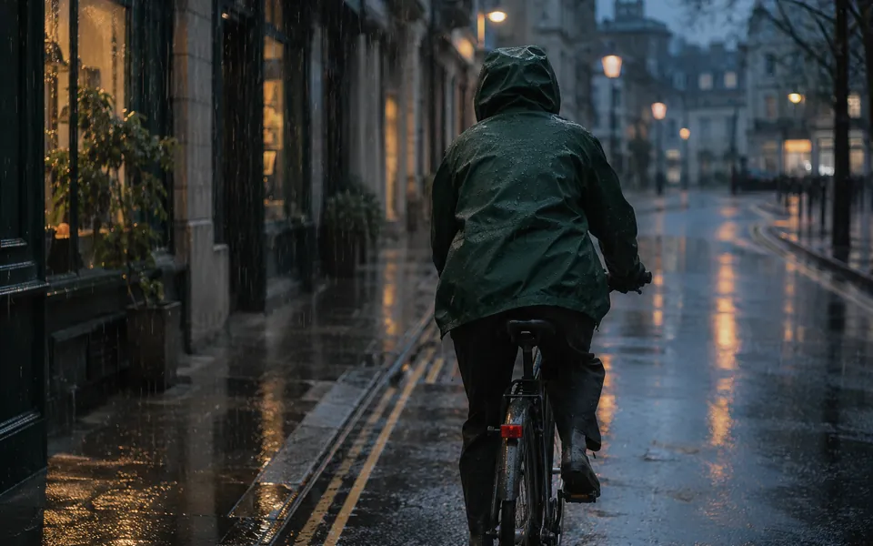
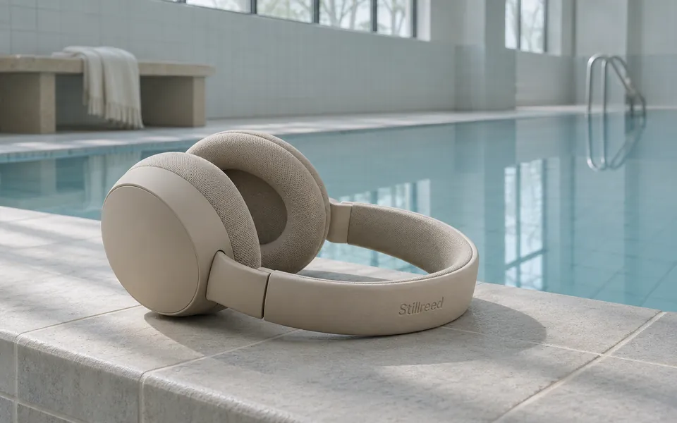
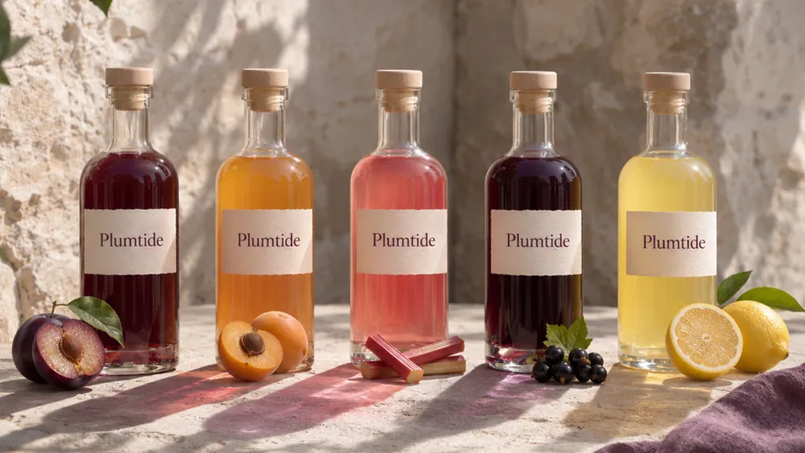
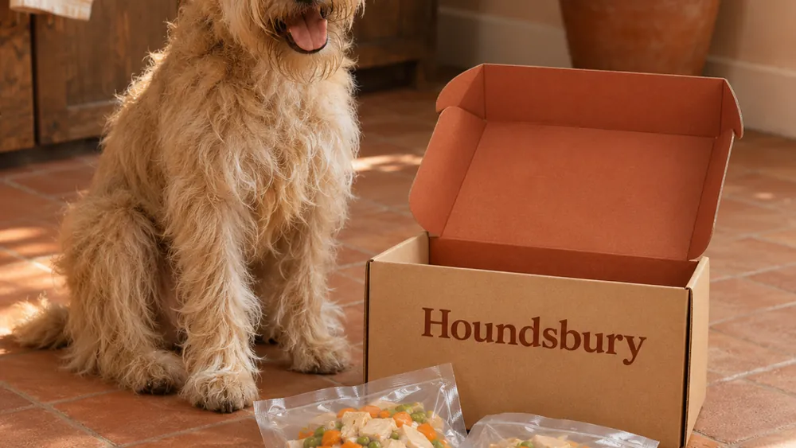
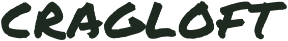

Mosswick is a creative and marketing studio in Lowmere. Thirty-two strategists, designers, writers, filmmakers, developers and media buyers work in one studio for founders and marketing teams: brand strategy and identity, packaging and websites, then social content, film and campaigns, and the paid media that gets it all seen and measured.
Four recent projects, each with the result it brought the client.
Culture · for Marshlight Festival, 2023
Marshlight Festival sells out nine days early with posters people want to keep
Campaigns, identity and film
Fashion · for Velloway, 2024
Velloway swaps mountain tops for wet city streets, and online sales rise 38% in launch month

Film, campaign and paid media
Hospitality · for Okra & Ash, 2025
Opening night, fully booked: how Okra & Ash went from no name on the door to five weeks booked out
Identity, website and launch social
Consumer tech · for Stillreed, 2025
Stillreed: A quiet campaign for headphones

Product films and launch campaign
Selected work
The brief, what we made and what changed, from seven recent projects.

Food and drink · Identity & Packaging
Plumtide
Plumtide’s founder made cordials in her kitchen and sold them at weekend markets. We drew a hand-cut fruit pattern and a warm wordmark, designed labels that change colour by flavour, and the range was stocked in 64 delis within a year.
A launch campaign and website for a family cargo e-bike that carries two children and the shopping up a steep hill. We filmed real families on real school runs, not models on empty roads.
In the launch quarter: 640 test rides booked at home, from paid social on streets near schools and a new booking site.

Pet food · Packaging & Paid Social
Houndsbury
Packaging and paid social for a fresh dog food subscription. Every pouch got a clear window onto the real ingredients, and weekly tests put short videos of dogs at dinner time against price-led ads. The dogs won: subscriptions up 2.4x in a year.
Homeware · Identity & Websites
Kilnmark
Identity and online shop for a ceramics studio whose glazes are the star. A calm serif, a small stamp for the base of every piece and product pages that show each glaze in daylight: online orders tripled in six months, and the founders update the shop themselves.
Energy & Home
Voltmere
Brand, website and a plain-language savings calculator for a home solar installer. Qualified leads up 3x, and sales calls got shorter.
Insurance
Shelterly
Brand, site and paid search for home insurance in plain English. The quote form went from 22 questions to 9, and completions rose 64%.
Drinks
Fizzwold
From glass bottles to cans, with a bubbly wordmark and short, odd films about fermentation. Stockists up from 80 to 310.
Ten of the brands we work with, most of them for years.

Kind words from people we work for
They asked better questions in the first week than our last agency did in a year. The new brand finally sounds like us.
Nadia FerranteFounder, Plumtide
Our ads used to be a guessing game. Mosswick set up the tracking, cut the waste and showed us exactly what every bit of spend brought back.
Owen HaddadHead of Growth, Paywren
The film crew turned up in the pouring rain, smiling. Months later, people still stop us at trade shows to talk about that campaign.
Jonas PellMarketing Director, Velloway
We had eight weeks to open a restaurant with no name. They gave us a name on the door, a full booking diary and a lot less stress.
Cora Mbeki-LaneOwner, Okra & Ash
Plain words, quick replies and work we are proud to put our name on. We have renewed with them every year since our first project.
Ilse VargaDirector, Hollin Gallery
The new website cut our quote form in half and far more people now finish it. Our board finally stopped asking about marketing spend.
Marcus TilleyChief Operating Officer, Shelterly
They treated our small charity like their biggest client. Volunteers now find us on their own, and the river looks better every spring.
Beatrix OyelaranDirector, River Commons Trust
Honest about what would work and what would not. That honesty saved us a lot of money in our first quarter of selling bikes.
Felix Andersen-RuizCo-founder, Gearfinch
For immediate release
Lowmere · Mosswick Studio, 1 Example Street
Make your next launch the one people quote.
Mosswick plans and makes brands, websites, films and campaigns, then runs the media that gets them seen. Tell us the problem in plain words, and within two working days we will come back with a plan, a budget and a first idea.